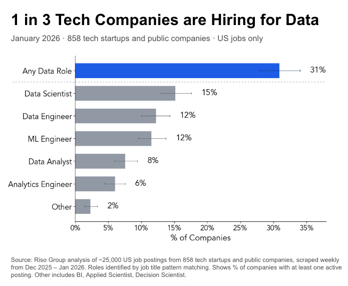

Which Data Roles Are in Demand?

Key Takeaways
- Nearly a third of tech companies have at least one open data role
- Data Scientist remains the most in-demand title
- Data Engineer and ML Engineer are similar in demand
- Analytics Engineer trails Data Analyst, despite growing buzz in the modern data stack community
Methodology
Analysis of ~25,000 US job postings from 858 tech startups and public companies, scraped weekly from Dec 2025 – Jan 2026. Roles identified by job title pattern matching. Shows % of companies with at least one active posting. Other includes BI, Applied Scientist, Decision Scientist.